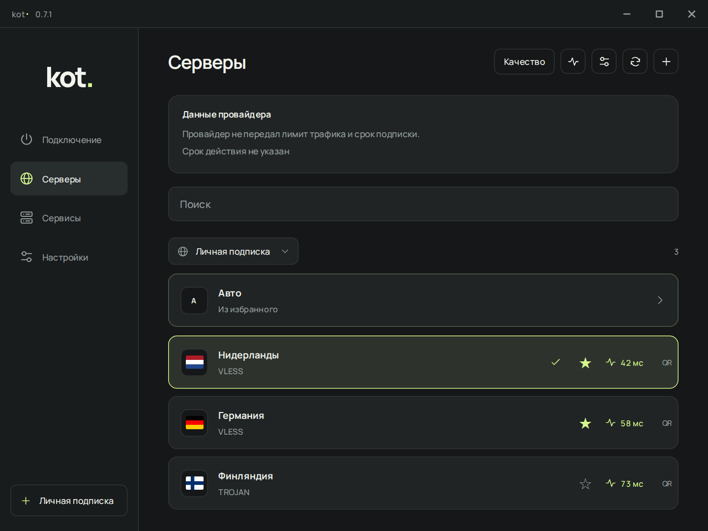
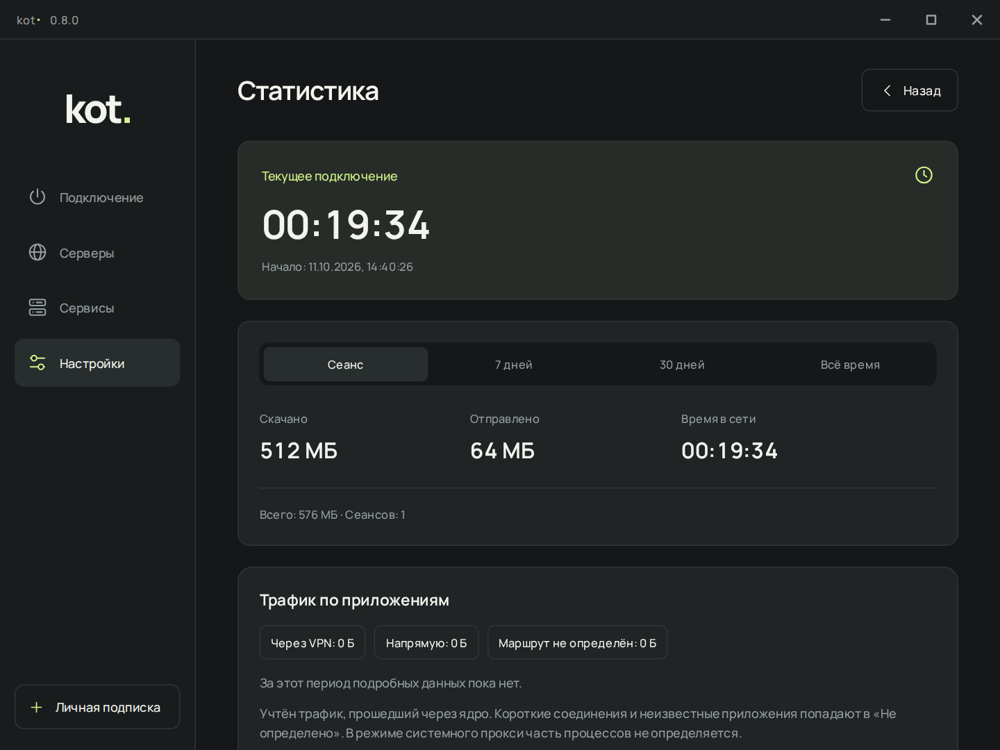
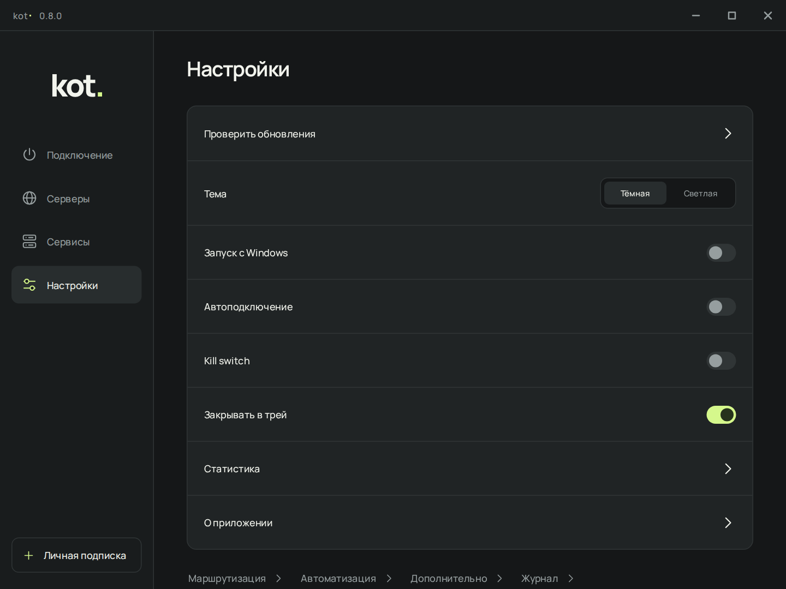

Твой маршрут
Сайты, приложения, подсети и страны: напрямую, через VPN или блокировать. Отдельные настройки DNS.
МаршрутизацияТВОИ СЕРВЕРЫ. ТВОЙ ИНТЕРНЕТ.
Последний релизКлиент для Windows. Твои подписки, серверы и правила маршрутизации в одном окне.
Демо {{demo-version}} с примерными данными, без подключения к VPN. Скачать можно стабильную версию.
Рассмотреть поближеКОГДА ХОЧЕТСЯ РАЗОБРАТЬСЯ
От быстрого выбора сервера
до настроек подключения.
Проверь задержку, найди сервер и сохрани избранное. Режим «Авто» выбирает доступный сервер с подходящей задержкой.



Снимки интерфейса 0.8.0. Серверы, пинг и трафик показаны для примера.
Сайты, приложения, подсети и страны: напрямую, через VPN или блокировать. Отдельные настройки DNS.
МаршрутизацияKill switch блокирует прямые соединения при ошибке подключения. Включается вручную, учитывает исключения.
Как работает защитаПроверка соединения и журнал помогают разобраться, когда что-то пошло не так.
Инструменты клиентаПЕРВЫЙ ЗАПУСК
Скачай Setup и запусти его. Нужные компоненты входят в установщик.
На странице «Серверы» нажми «+» и вставь свою ссылку на подписку или сервер.
Выбери сервер и нажми кнопку подключения. Для всего устройства используй TUN.
kot. бесплатный. Серверы и подписки в комплект не входят.
Руководство по первому запускуНа Windows 10 и 11, x64. Для подключения через TUN нужны права администратора. Необходимые компоненты входят в Setup.
TUN направляет трафик устройства через виртуальный интерфейс с учётом правил маршрутизации. Системный прокси работает с приложениями, которые его поддерживают. Режим выбирается на главном экране.
VLESS, VMess, Trojan, Shadowsocks и Hysteria2. Есть импорт подписок и QR-кодов, поддержка XHTTP и REALITY для совместимых серверов. Детали транспорта собраны в руководстве по XHTTP.
kot. проверяет GitHub при запуске и раз в сутки. Загрузка и установка начинаются после нажатия «Обновить», перед установкой проверяются подписи. Можно выбрать «Не сейчас». Подписки и настройки сохраняются.
При ошибке подключения или падении программы прямой интернет остаётся заблокирован. Подключись снова или выключи защиту в настройках. Ручное отключение и обычный выход снимают блокировку. Явно настроенные прямые маршруты продолжают действовать.
Открой Issues на GitHub и опиши шаги, версию kot. и Windows. Перед публикацией лога убери личные данные, ключи и ссылки на подписки.
МОЖНО ВОЗВРАЩАТЬСЯ К ДЕЛАМ
Твоя подписка. Твой сервер. Твой kot.